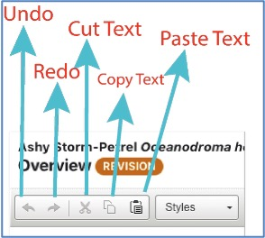
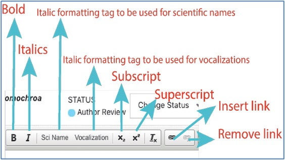
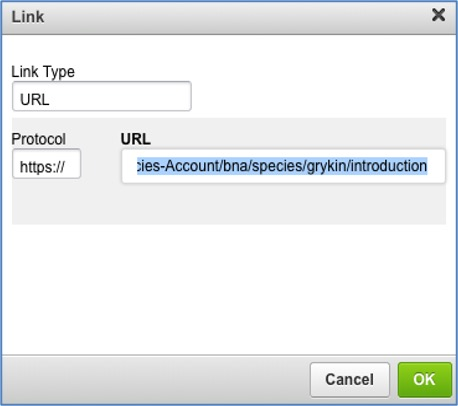
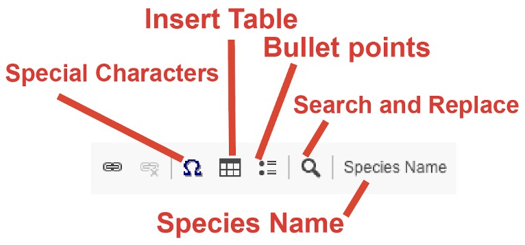
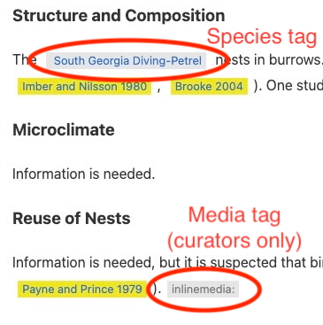
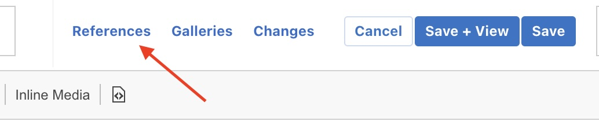
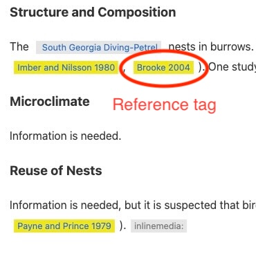
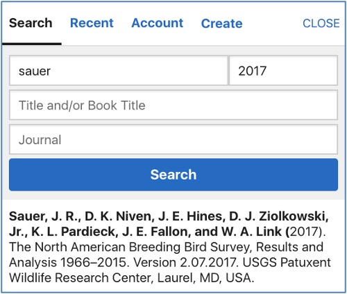
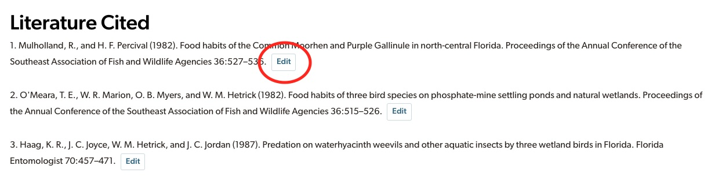

How to Edit and Revise on the BOW Website
Step 1: Creating an Account
You will need a Cornell Lab of Ornithology username and password to access a draft account(s). If you already have an account for one or more Cornell Lab projects (e.g., BOW, eBird, Great Backyard Bird Count, or NestWatch), then please use that username and password.
If you do not already have an individual username, you can create a username (or sign into an existing account) here: https://secure.birds.cornell.edu/identity/account/create
Note: Even if you have institutional access to BOW (e.g., AOS, USFWS, or university access), you will still need to create an individual user account to contribute.
After establishing a username, please complete our Contributor Information Form (English, Spanish) so that BOW staff can provide you with access to a draft species account.
Step 2: Accessing the BOW Website
The homepage for BOW is https://birdsoftheworld.org/bow/home. Please use the Chrome browser to access the site and its editing tools.
Once you are on the BOW homepage, you should sign in using the username that you provided in the Contributor Information Form, as only this account will have the permissions required to edit and revise the species account you’re working on. You can verify that you are signed in if you see a black icon of a person followed by your name (username) in the upper right of the page. Note, you may need to widen the size of your browser window if you are confident that you are signed in but do not see the icon.
Note: If you are accessing BOW from a connection with automatic institutional access, you may be automatically signed into an institutional account and will not have the correct permissions to access the draft. To sign into your individual account, click on the person icon and select “Sign in as different user.” This should enable you to sign into your individual account.
Once you are signed in, enter the name of your species in the search box at the center left of the home page or at the upper left of a species page. You can use the common name (as per your user account’s language settings), scientific name, or four-letter alpha code for the species to search for the account.
On the Introduction page (or if you navigate to any other pages in the account), you will see a black bar that says “Version: Live - X.Y” at the top of the screen. Clicking on this button will pull up a drop-down menu with all active versions of the account (“Live” = what the public sees, and “Draft” = the draft that you will be working on, which is not publicly available). You should select the draft, which will be the highest numbered version available: the numbers denote the version of the account, which is correlated with a unique and citable DOI (see Step 5: Linking and Adding References for a definition of “DOI”).
Once you have selected the draft version of the account, you will see an orange bar labeled “REVISION” at the top of each page of the account. You can click the “Edit Revision” button that appears at the upper right of each major section of text. This button will pull up an online editor from which you can edit the original text and build a draft account for your species.
Be aware that each time you log back in to continue your revisions, your earlier work on a page or section will be visible only in the draft version of the account (not the live version).
Step 3: Understanding the Editor Menu Bar
Once you open the online editor, the editing tools will be displayed in a menu bar near the top of the screen in your browser. You can “hover” your cursor over any of the buttons for a brief description of their functionality.
Under the species name (at the top left of the screen) and next to the page name there should be an orange label that reads “REVISION.” This is your indication that you are editing the draft account.
Below is a series of screen captures that walks you through the functionality of the editor menu bar. In general, the editor menu buttons are standard, and they work the same as they might in most text editing software programs, such as Microsoft Word. Typical keyboard shortcuts (e.g., Control + V) also work, in addition to the button functions outlined below.
Labeled in the image in red are the functions for the first five editor menu buttons:

The two arrow buttons allow you to undo or redo your most recent change. The scissors icon allows you to cut highlighted text, while the two pages icon allows you to copy highlighted text, and the clipboard icon allows you to paste text.
The “Styles” drop-down menu allows you to format different levels of headings. Account subsection headings should be entered as “Heading 1” (do not bold manually), and any headings within those subsections should be entered as “Heading 2” (do not bold manually). See Appendix 2 for a list of pages, sections, and subsections.

Next (in red) are buttons that allow you to bold text, italicize text, and format a scientific name or a vocalization. To use these buttons, highlight the text you would like to change, and then click the button corresponding to the change you would like to make. The italics, “Sci Name,” and “Vocalization” tags all give the same appearance (italicized text); however, the Sci Name and Vocalization buttons insert a hidden tag that allows our system to recognize the special formatting. In the future, this will allow the system to make automatic updates when taxonomy changes or to link up media.
- Note, you should use the Sci Name button only when italicizing genera, subspecies, and the scientific names of species other than birds. This may include discussions of historical taxonomy or subspecies taxonomy (e.g., “the subspecies flavicola”). The Species Name button (see below) should be used for all bird common names, scientific names, and binomials. For more information, see Referring to Species.
- Please use the Vocalization button to italicize onomatopoeic vocalizations (e.g., “Chuk call”). Do not italicize descriptive vocalizations like “Alarm Call.”
Next are buttons for subscript (e.g., x1) or superscript (e.g., km2). To use these buttons, use your cursor to highlight the character that will become the subscript or superscript, and then click the desired button. The Tx button removes any special formatting.
The chain link icon inserts a link to a URL. You may want to link to content elsewhere in the account or on an external website. To do this, use your cursor to highlight the word or phrase in the draft text that will anchor the link; click on the chain link icon (a short length of chain).

- To insert a link to an external website, you will paste the URL of your destination into the URL box of the pop-up window and then click on the green “OK” button. Remember to always check the link to confirm that it is operational; you can do this after clicking “Save + View.” If the link needs to be removed or changed, just go back to the editor and right click on the blue (linked) text in the account. You can then click “Edit Link” or “Unlink” (or simply delete the linked text in the document).
- When inserting a link to a page or a section within an account (e.g., “see Demography and Populations: Population Status”), highlight the text in the draft to be linked, click on the chain link icon, and then click on the box labeled “Protocol” and select “<other>” (not “https://”). Specify the URL as simply its “PAGE#SECTION” portion. For example, “demography#popstat” (no spaces). You can determine how pages and sections are named in URLs by opening the account in a new tab and navigating to the relevant page or section using the links on the left side of the page. Copy the text after the final “/” in the URL and paste it into the box in the editor.
- When inserting a link to a specific page or a section within a different account, use protocol “<other>” (not “https://”) in the link tool and specify the URL as /bow/species/SPECIES_CODE/cur/PAGE#SECTION. For example, if you want to link to the Plumage section in the Red-throated Loon account, you will use: /bow/species/retloo/cur/appearance#plume
- You can link only to pages or sections; if trying to link to a subsection, please link to the section that contains it, and leave the subsection unlinked.
- The first time a bird genus or family is mentioned in a given section (or the first time it is used on a page if that page is short), please link to the relevant destination on BOW. Again, use the “<other>” protocol, and specify the URL as follows:
- For a genus:
- /bow/species/gralla2/cur/species#genusGrallaria
- To get the relevant text, go to the BOW account for any species in that genus. Click on the genus name near the top of the page. Use everything in the URL after the “.org”
- For a family:
- /bow/species/gralla2/cur/introduction
- To get the relevant text, search for the family in the BOW search bar and go to the relevant account. Use everything in the URL after the “.org”
- For a genus:

The Omega symbol (Ω) button provides access to special character menus. Clicking on the Ω button will bring up several menus of accented characters, mathematical symbols, etc. If you have trouble finding any symbols (e.g., ≤ ≥ ° ± × – —), we suggest that you copy/paste these from the internet or from Appendix 4.
Please DO NOT use the “Insert Table” button to insert a table at this time. Rather, follow the instructions for tables outlined in Appendix 7.
The next button allows for formatting of bullet points.
To search for or replace text in the text editor, click the magnifying glass icon.
Finally, you should use the Species Name button when linking to a bird’s common or scientific name (or both). This button will insert a bird name as a “species tag” that will allow it to be displayed in different languages and facilitate automatic updates if the nomenclature changes. For more information on using the Species Name button and formatting for using species names in general, see Referring to Species.
- Warning: Species tags will retain the formatting of any replaced text (e.g., italics, Sci Name tags, bolding, or hyperlinks), so be sure to remove (unclick) any such formatting from the text you are replacing.
- There may be cases when you do NOT want a species name to change with taxonomic changes (e.g., discussing the history of a name or taxon or discussing a subspecies). In these cases, the species name should be untagged (i.e., no species tag).
The “Media Link” and “Inline Media” buttons are intended for BOW curators, so please ignore these buttons. If you would like to include media in your draft, you can attach a Word document to the Draft Completion Form (English, Spanish), or you can include Macaulay Library asset numbers in parentheses in the draft’s text itself. Refer to Appendix 7 for more details.

The last button (a page with arrows inside) allows you to view the HTML code for the text. You should not need to view the HTML under normal authoring circumstances.
Step 4: Revising the Draft Account
Your draft account will contain the headings and all of the text that appeared in the most recent published version of the account. This content and structure may not align with current standards for BOW accounts, so be sure to compare what is in your draft with Appendix 2 and Appendix 3.
When you are revising a draft account, you can modify the text, and/or add or subtract to/from it, as you add new text and references. Text from vertically stacked accounts (e.g., HBW accounts) will have been incorporated into BOW in its original form (i.e., unreferenced and in a single block of text that may correspond to several different sections/subsections in the BOW expanded account structure). You should read this text carefully and remove any inactive links. Whenever possible, you should replace this text with your own referenced summary of the primary literature. Do not assume that this text has been placed in the most appropriate section of the account: it may be that portions of that text correlate better to other sections or subsections of the account, and you should parse it out appropriately.
We recommend that you compose your draft directly in the text editor, but you can also cut and paste text into the editor from a Word document (or similar). Errors can be introduced during the “cut and paste” method, so we always suggest that you carefully review your work.
BOW’s editing tools do not include a sophisticated spell-check feature, but when you are in edit mode and place the cursor in the text box, words that the text editor does not recognize are underlined in red. Most highlighted words are names that are unfamiliar to the text editor—scientific names, proper nouns (like names of authors or geographic features), etc.—but a careful perusal of flagged words often reveals an inadvertent typo. Unfortunately, this spell-check feature does not provide suggested alternative spellings—it falls on you to correct mistakes!
Saving your work regularly and often is always a good idea! There are two ways to save your changes, which are denoted by the two blue buttons at the top right of the screen: “Save + View” and “Save.”
“Save + View” allows you to save your work and then see how it appears in the draft account. Hitting this button will take you out of the editor and into the draft account. “Save” will save your work in the editor, but you will remain in the editing window. To exit the editor without saving any changes that you have made since the last save, click on the white “Cancel” button at the upper right of the toolbar.
Note: The editor window will time out if left inactive for 60 minutes.
If you get an error message (“Sorry, you cannot access that page”) when trying to save your work, you have either hit the save button more than once, or another person might be editing the same section. When you get this message, if possible, you should copy your work to ensure that it is backed up. Alternately, to restore work that was not saved: (1) Click the orange “Sign In” button in the upper right corner. You should now see the editor window without your changes. (2) Click the “Back” button in your browser two times (not the back arrow in the editor window). You should now see the editor window with your unsaved changes restored. (3) Click “Save” immediately to save your work.
You can navigate between pages in revision mode by using the index of pages within the account on the left-hand side of the page or the navigation at the bottom of each page as long as you are actively working on the account. If you are logged out of BOW, you will see the “live” version of the text the next time you log in, and you will need to switch to viewing the revision again to see your revised text (see Step 2: Accessing the BOW Website).
Note: Many aspects of a new version will not be finalized until after the Draft period. Media and figures are typically added to the draft during the Editorial Review period, and the account citation (which appears at the bottom of the screen) will not be fully updated from the previous version’s authorship until there is final consensus between the contributors and BOW staff on the authors and author order, usually during the Final Review period.
Step 5: Linking and Adding References
Before working with citations and references, we strongly encourage contributors to view a recently published account to view how numbered citations and references now appear.
To add a linked reference to your text, place your cursor where you would like the reference to appear, or highlight the text you would like a linked reference to replace, and then click on the blue “References” option that appears in the upper right of the editor window.

This will open a reference module (see below) to the right of the main editing window. First, it is helpful to check the references already cited in the account using the “Account” button. If you see your desired reference in that list, simply click on it to insert a “reference tag” in the text. This tag will show up as a yellow box with the first author’s surname and publication year.

If the reference you would like to cite has not already been included in the account, you can search for an existing reference in the BOW master bibliography using the “Author,” “Publish Year,” “Title and/or Book Title,” or “Journal” fields. Putting information into these fields will pull up references that match the information you have entered. Once you find the reference you would like to use, you can click on it to insert the reference tag into the text. Often, you will need to enter only the first author’s surname and year to find the reference you are seeking. Note that any diacritical marks used in the author’s name will need to be used in the search box, so you might want to copy the author’s name from the publication and paste it into the search box.

Note: BOW’s master bibliography includes references from the BNA, NB, and HBW projects. As such, some references might occur in the master bibliography multiple times. Please make sure that if you use a reference that has multiple entries in our database, you are consistent in using the same one throughout the account you are revising. You can check this by looking for duplicates in the Literature Cited section when ordered alphabetically. When a duplicate is found, insert the reference tag for the version that most closely matches BOW’s format (or, if format does not differ, the version with a DOI or URL) into the text, and then replace all instances of the duplicate with that tag. Please also remember to check the list of references already associated with an account before adding one from the master bibliography.
In addition to searching for references by the fields listed above, you can also view recently added references to the account by clicking “Recent.”
Note that not all references in the reference database are in the format now being used in species accounts. BOW staff are working to standardize reference format across all accounts.
If you would like to add a reference that does not appear in the search, you can click “Create.”
First, select the publication type you would like to enter (Journal Article, Book Chapter, Book, or Other). Then, fill out (or copy and paste into) the fields as they appear on the “Create new reference” form.
For the “Full reference” field, you will insert the reference into the text field. The citation you input into that field is what will appear in the bibliography. Do not insert DOI or URL information into this field (see below). Please follow the format outlined in Appendix 5 when adding references.
Moving down, the text in the “Author Prefix” field will determine how the author names should appear in inline citations (e.g., Smith, Smith and Jones, or Smith et al.). Please do not use “&” in this field; spell out “and” instead.
The “Authors,” “Year published,” “Article title,” and “Journal title” fields will allow the reference you are creating to be searchable in our reference database by author name, year, title, and journal, respectively.
You are also asked to provide the “DOI” number. This is a unique alphanumeric string assigned with each publication that allows it to be identified on the internet. While it may take some time to locate the DOI for some publications, providing it will help ensure that reference is correct and accessible.
If the material you are referencing is published exclusively online and does not have a DOI or come from an established scientific journal (e.g., it is an organization’s webpage or an online report), please include the URL. If you have DOI, there is no need to enter a URL.
Once you have completed the “Create new reference” form, you will review the information you entered. If your reference is similar to another in our database, the system will ask if you are entering a duplicate. If the information is correct and the reference is unique, then click the blue “Save” button. The reference will appear in the account bibliography and will be available in the reference search for linking in the text. If the reference you entered is indeed a duplicate, please do not create another reference. You should use the existing reference and notify BOW staff if that reference needs to be reformatted.
As an author, you can edit or remove references that you (and only you) have added to the bibliographic database. To do this, navigate to the References page of the account. There, you will see links to edit any references you have created (see example in screenshot below). If the reference has not yet been used in the account, you will also see a link to remove the reference. Each reference cited in the text must be listed on the References page and vice versa. Please make a final check for any unused references when the draft is complete.

Note: You cannot edit references that you did not create. You may find existing references that are incorrect or incomplete. In these situations, you should collect your suggested edits into a Word document that you submit via the Draft Completion Form (English, Spanish) or alert BOW staff, who will make the changes for you.
Step 6: Account Review and Publication
Once you have completely finished the revision, you should collect any supplementary materials you would like to include with your draft (e.g., media requests, map edits, figures, or tables) and then fill out the Draft Completion Form (English, Spanish), which will help us collate information relating to your draft. Please make sure that you include any necessary edits to the map, as map revisions can take BOW staff some time.
It is not necessary to change the status of each section from “Draft” (in red) to “Editor Review” (in orange); once sections are in the “Editor Review” state, they cannot be edited, so a BOW editor will change the state when they begin their review, allowing you to continue to make final tweaks while the draft is awaiting review.
When we receive your form, your account will go into a review queue until BOW editors are able to look over your work. BOW staff will review and edit the text as needed and will begin to add media (images, videos, sounds, and figures), tables, and any formatting that is necessary for final publication. If your account is to be externally reviewed, it will be sent out during this period.
Once the Editor Review period is completed, BOW staff will email you a summation of any significant changes that were made to the draft’s text, as well as any issues in the account that require clarification or additional work (e.g., format, references, or more content for a particular section). The Author Review will typically be a one-month period in which you will be able to make final changes to the account before it is published online. A slightly longer period may be allotted if your account received an external review or if there are more extensive comments to address. This final review period is not intended for lengthy drafting, and contributors are asked to please avoid making changes to formatting (but please let us know if you have questions or note an inconsistency).
During the Author Review period, all authors should read over the BOW editor’s comments, make any relevant changes, review the account in its entirety, and verify that the format and spelling of their name (e.g., initials to include) are displayed correctly in the citation. If you would like more time for review, please alert BOW staff as soon as possible. If BOW staff are not able to communicate with you, they will assume you will not participate in the review process further and will proceed with the draft’s publication. Any edits or feedback you submit after publication may still be incorporated into the account, although extensive changes may necessitate a new version.
Once your account is published, we encourage you to submit any additional minor edits or corrections by emailing Brooke Keeney (bkk37@cornell.edu) or Maria Smith (mgs248@cornell.edu).
Finally, if you have questions about formatting or the best way to proceed with anything from a technical standpoint, please contact Brooke Keeney (bkk37@cornell.edu) or Maria Smith (mgs248@cornell.edu).
Thank you for all of your work! We look forward to your revision!